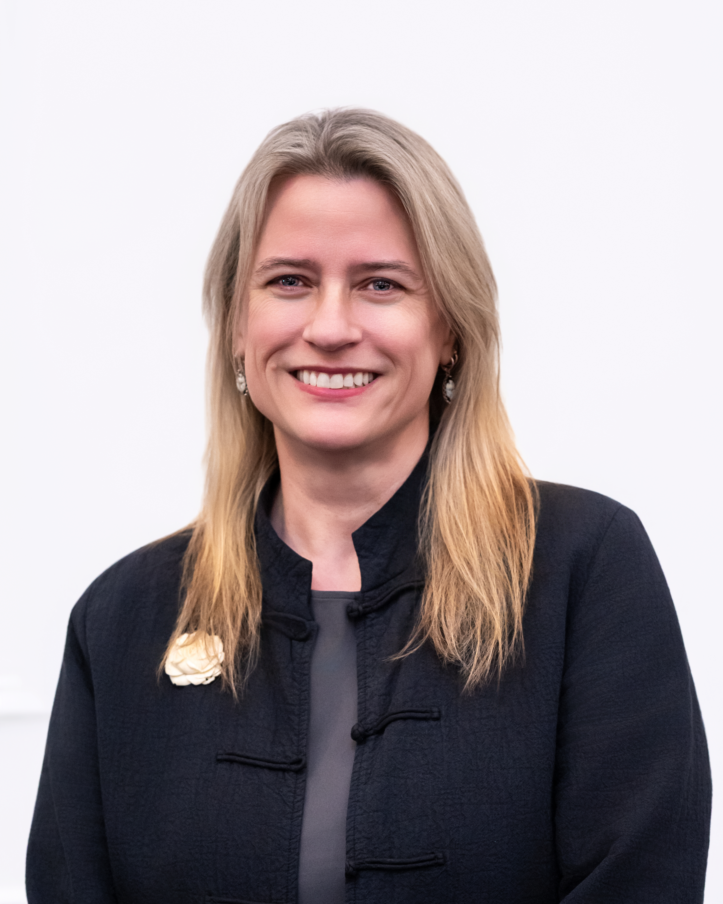

Desktop Screening
Early risk read before design dollars are committed: known resources, SHPO records review, and likelihood of effect.

Atomic Blondeaux helps public infrastructure teams move through Section 106 review efficiently—from defining the Area of Potential Effects and evaluating historic resources to findings of effect, mitigation, and SHPO coordination.
From early project screening through consultation and resolution, Atomic Blondeaux provides focused preservation expertise that integrates with infrastructure project teams.
Early risk read before design dollars are committed: known resources, SHPO records review, and likelihood of effect.
APE delineation, historic resource surveys, National Register eligibility recommendations, and findings of effect.
Mitigation planning, memorandum of agreement support, and agency coordination through resolution.
A preservation specialist on your team when review questions arise during design or construction.
Preservation expertise that understands the project, not just the resource.
Atomic Blondeaux brings preservation expertise into the language, constraints, schedules, and decision-making environment of engineering and public infrastructure.
Doctoral research integrating architecture, historic preservation, art history, religion, adaptive reuse, and the regulatory environment surrounding a significant New Orleans church complex.
More than two decades of experience with engineering, coastal restoration and protection, hurricane protection, and technical programs throughout Louisiana and the southeastern United States.
Longstanding work translating engineering findings and infrastructure conditions into policy engagement, public communication, and federal advocacy through ASCE.

A preservation specialist who already understands the infrastructure table.
Dr. Hains brings more than two decades of experience spanning engineering, coastal restoration and protection, hurricane protection, public-sector programs, cultural institutions, historic preservation, and infrastructure advocacy.
Her Doctor of Design in Cultural Preservation from Louisiana State University focused on historic preservation and Section 106, building upon years of public service and applied work with the built environment.
That combination allows Atomic Blondeaux to work comfortably alongside engineers, architects, environmental professionals, agencies, developers, and community stakeholders without treating preservation as an isolated discipline.
Dr. Hains is also a partner at Digi Twin Global, where she works on digital twins for the built environment, and serves as the Louisiana Section ASCE State Government Relations Advocacy Captain. Atomic Blondeaux is her independent historic preservation consulting practice.
Need preservation expertise that can integrate with an infrastructure team? Start the conversation.